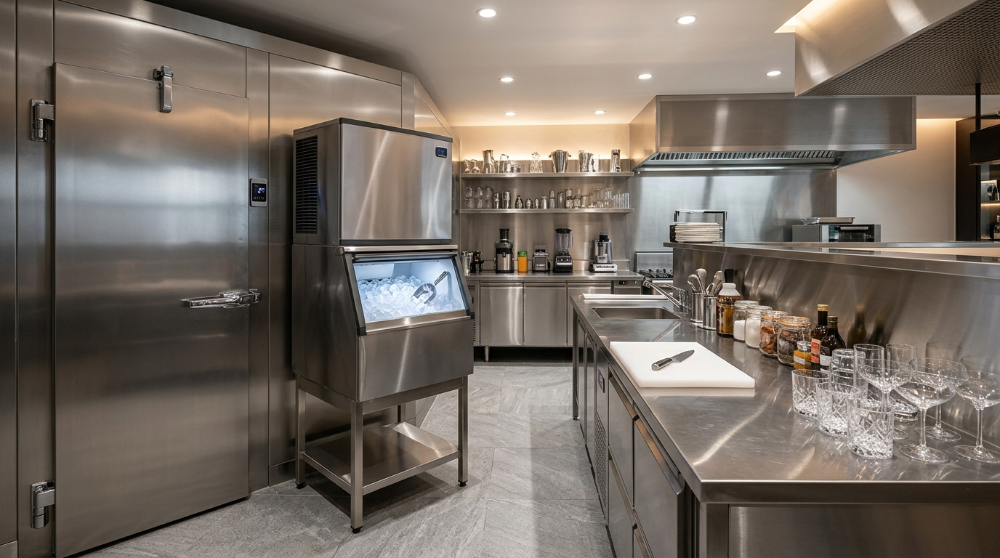
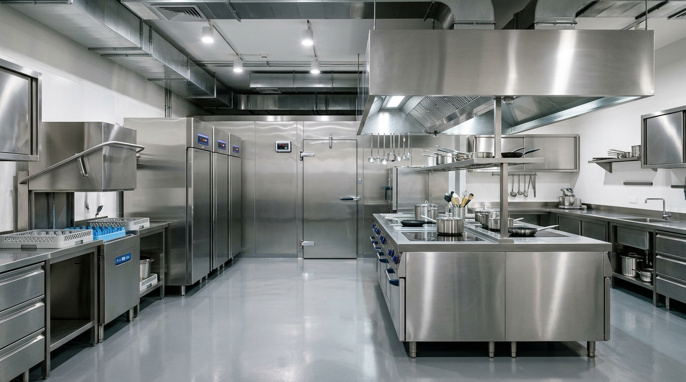

Ort. 30 Dk Acil
Soğuk Hava Deposu Yetkili Servisi
+2°C muhafaza ve -18°C şok soğuk hava depolarında kompresör, fan, defrost rezistansı, dijital pano ve gaz müdahalesi.
📞 Tıkla Ara: 0850 380 02 0281 ilde soğutma sistemleri servisi ve yetkili servisi ihtiyacınızda tam donanımlı gezici araçlarımızla ortalama 30 dakikada adresinizdeyiz. 12 ay resmi yedek parça ve işçilik garantisiyle yerinde onarım sağlıyoruz.

Numaranızı bırakın, Soğutma Sistemleri Yetkili Servisi uzman teknisyenimiz hemen arasın.
+2°C muhafaza ve -18°C şok soğuk hava depolarında kompresör, fan, defrost rezistansı, dijital pano ve gaz müdahalesi.
📞 Tıkla Ara: 0850 380 02 02
Ort. 30 Dk AcilRestoran, otel, kasap ve market tipi paslanmaz sanayi buzdolapları, giyotin bulaşık makineleri ve konveksiyonlu fırın tamiri.
📞 Tıkla Ara: 0850 380 02 02Kafe, bar ve otel buz makineleri su/gaz çevrimi ile elektrikli/gazlı sanayi tipi çay kazanı rezistans ve şamandıra tamiri.
📞 Tıkla Ara: 0850 380 02 02Makine kazan içindeki suyu boşaltamıyor, sıkma adımına geçmeden duruyor.
Kombi ateşleme denemesi yapıyor ancak peteklere veya sıcak suya ısı vermeden kırmızı arıza lambası yakıyor.
Kombi ekranında F22 / E10 yanıp sönüyor, sirkülasyon pompası korumaya geçtiği için cihaz çalışmıyor.
Musluk işareti yanıyor, tahliye pompası makine kapalıyken bile sürekli çalışmaya devam ediyor.